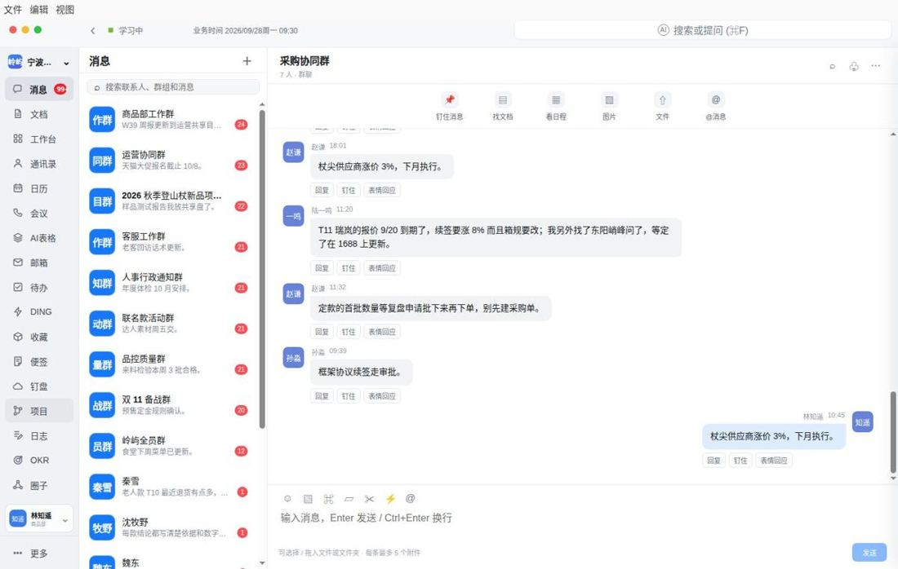
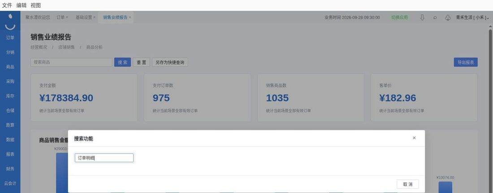
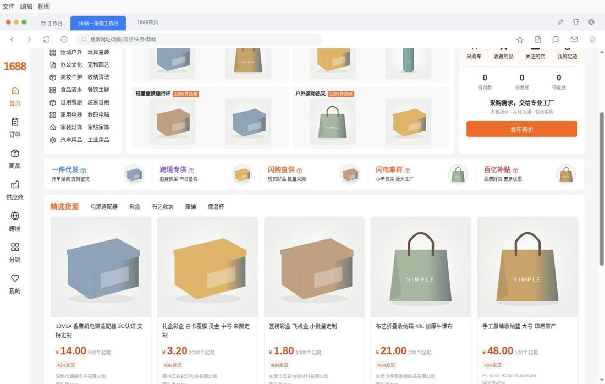
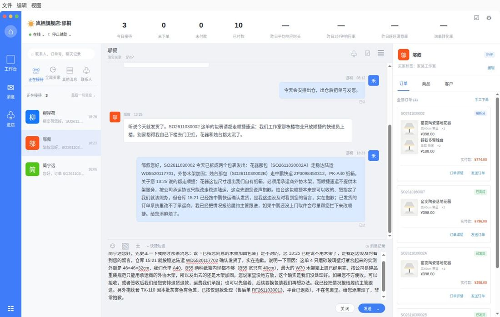
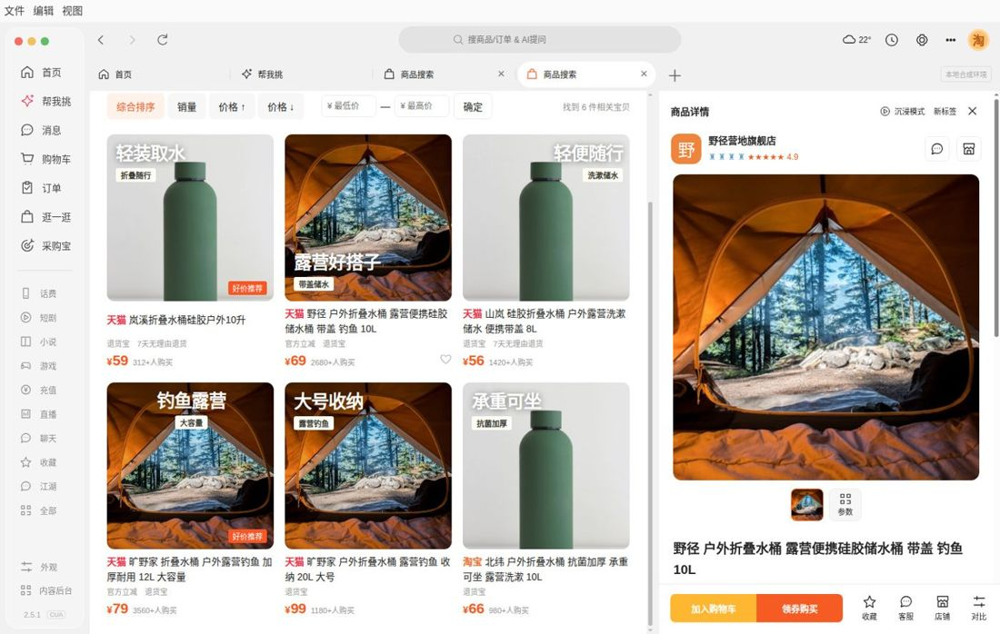

图 1 员工 VM 中的五个业务系统（截图取自模型运行过程）。每个任务的公司数据在这些系统中单独生成。
图 2 员工开工时看到的钉钉。会话列表中是这家公司已有的群聊和私聊，大部分与当前任务无关。
表 2 初始环境规模，由任务生成器为每个任务单独构建。
图 3 一次评测的流程。环境在员工工作过程中触发事件；评分器只读取交卷时的系统终态。
图 4 1688 采购首页。供应商的商品与报价在这里查看；途中事件可能直接修改报价，不另发消息。
图 5 事件按内容归类（关键词启发式）。
事件落地时刻占整次运行时长的比例
原文摘录
表 3 领域分布。
表 4 每个任务组合使用其中若干类。
每个任务按以下流程构建，冻结后不再修改。
括号内为权重。✓ 通过 ◐ 部分 ✗ 未通过 · 不适用
表 5 示例任务五组的规则级结果。
图 7 各子集的 partial 均值（0–100）。
表 6 各领域的 partial 均值。
图 8 横轴为 GPT-6.1 Sol 的 partial，纵轴为其余四组的最高 partial；对角线以下表示 GPT-6.1 Sol 领先。点击可查看任务。
图 9 每组 100 个任务的 partial 分布；方框为四分位区间，竖线为中位数。
本节数字由本页数据计算；案例中的行为描述来自对轨迹和审计日志的逐条核对。
图 10 深色为事件相关规则，浅色为其余规则（按规则标题关键词归类）。
表 7 只统计触发过事件的运行。“重新查看”指事件发生后又打开过业务系统页面。
表 8 各模型行为指标（每组 100 次运行的中位数；写入构成为全部写入的占比）。
图 11 各模型对业务系统的写入按类型的占比。
上方为五个模型在五个 App 中的操作时间线：灰色短线为首次打开某个会话、文档或页面，彩色圆点为数据写入，紫色虚线为途中事件。下方为单个模型的完整步骤，包括思考、回复、每次工具调用及其结果摘要和运行中的截图。
图 12 同一任务下五个模型的 App 操作时间线。
点击任一行查看题面、途中事件、逐条判分和交卷回复。